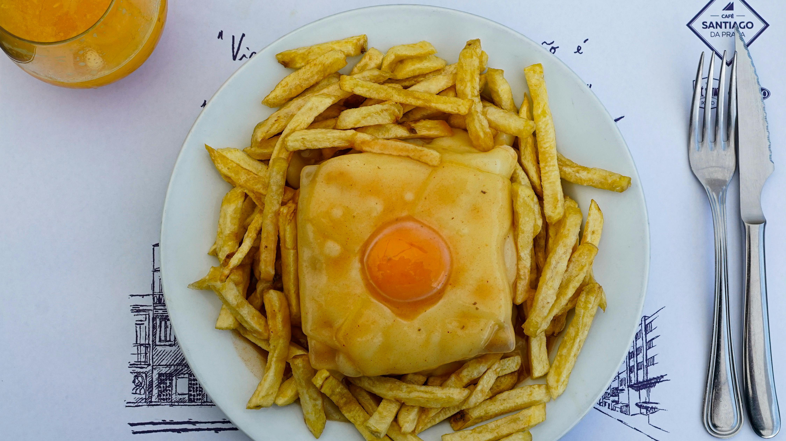

Home
Francesinha

Description
Francesinha is a famous Portuguese sandwich from Porto, made with bread, wet-cured ham, linguiça, fresh sausage, steak or roast meat, and covered with melted cheese and a rich, spicy tomato and beer sauce.
It is typically served hot, often with French fries and sometimes topped with a fried egg, making it a hearty and indulgent meal.
Ingredients
- 2 slices of white bread
- 2 slices of ham
- 1 linguiça (Portuguese sausage), sliced
- 1 grilled steak or roast meat (beef or pork)
- 2 slices of cheese (for melting)
- 1 egg (optional, for topping)
- French fries (for serving)
- For the sauce:
- 1 cup tomato sauce
- 1/2 cup beer
- 1 tbsp butter
- 1 tbsp flour
- 1 cup beef or chicken broth
- 1 tsp piri-piri sauce or hot sauce
- Salt and pepper to taste
Instructions
- Prepare the sauce: Melt butter in a saucepan, add flour, and cook for 1 minute. Stir in tomato sauce, beer, broth, and hot sauce. Simmer until thickened. Season with salt and pepper.
- Assemble the sandwich: Layer ham, linguiça, and steak between the bread slices.
- Cover the sandwich with cheese slices.
- Pour some sauce over the sandwich.
- Bake or grill until the cheese is melted and bubbly.
- Optionally, top with a fried egg.
- Serve hot with French fries and extra sauce on the side.